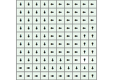

Reachability Solver
Reachability problems in MDP or POMDP consists at computing the policy that maximizes the chances of reaching a desired set of states. In constrained reachability problem, there is an additional constraint that a given set of states must be avoided.
The ReachabilitySolver solves reachability and constrained reachability problems in MDPs and POMDPs expressed using POMDPs.jls. It returns the policy that maximizes the probability of reaching a given set of states. For some policies, like value iteration policies, you also get the value function which is equivalent to the probability of reaching a desired state.
In POMDPModelChecking.jl, the reachability solver express the problem as a planning problem. Given a POMDP model, it automatically defines a ReachabilityPOMDP such that solving this problem with traditionnal POMDP algorithms yields the solution to the reachability problem. With this approach, the ReachabilitySolver supports any kind of solvers from POMDPs.jl.
Reachability in MDPs
Here is an example of solving a reachability problem in a grid world MDP.
using POMDPs
using POMDPModelChecking
using POMDPModels
using DiscreteValueIteration
mdp = SimpleGridWorld(size=(10,10), terminate_from=Set([GWPos(9,3)]), tprob=0.5)
# Reach the cell (10,1) and avoid cell (9, 3) in the gridworld
solver = ReachabilitySolver(reach=Set([GWPos(10,1)]),
avoid = Set([GWPos(9, 3)]),
solver = ValueIterationSolver(verbose=true))
policy = solve(solver, mdp)
# Maximum probability of reaching (10, 1) while in state (1, 1)
value(policy, GWPos(1, 1))0.8942878479527075
In the case of MDP problems, we can visualize the resulting probability of success over the whole state space
using POMDPModelTools
# overwrite the usual gridworld colorscale because here
# the value is a probability
using ColorSchemes
function POMDPModels.tocolor(r::Float64)
minr = 0.0
maxr = 1.0
frac = (r-minr)/(maxr-minr)
return get(ColorSchemes.redgreensplit, frac)
end
p = render(mdp, color = s->value(policy, s), policy=policy)
Reachability in POMDPs
Using the same methodology, we can solve reachability problems in POMDPs. The interface is exactly the same, but the result is interpreted differently. POMDP solvers outputs a belief state policy and belief state value function. As a consequence, it gives the probability of reaching the reach set in a given belief state.
Instead of using ValueIterationSolver as the backend to solve the associated reward maximization problem, we use an approximate POMDP solver like SARSOP.
The test folder of this package contains an implementation of gridworld where the agent only has a noisy observation of its position.
using POMDPs
using POMDPModelChecking
using SARSOP
include(joinpath(dirname(pathof(POMDPModelChecking)), "../test/blind_gridworld.jl"))
pomdp = BlindGridWorld(exit=GWPos(10, 1))
solver = ReachabilitySolver(reach=Set([GWPos(10,1)]),
avoid = Set([GWPos(9, 3)]),
solver = SARSOPSolver(verbose=true,precision=1e-2, timeout=5))
policy = solve(solver, pomdp)
b0 = initialstate_distribution(pomdp)
value(policy, b0)0.7877200891089109
POMDPModelChecking.ReachabilitySolver — TypeReachabilitySolver{S} <: SolverSolves reachability and constrained reachability problems in MDPs and POMDPs. It returns the policy that maximizes the probability of reaching a given set of states. It takes as input the set of states to reach and the set of states to avoid, as well as the underlying solver. Any solver from POMDPs.jl are supported.
Fields
The field are specified as keyword arguments to the solver.
reach::Set{S}the set of states to reachavoid::Set{S}the set of states to avoidsolver::Solverthe underlying solver to use (default isValueIterationSolver)